מהרגע שהעובדים מגישים בקשות ועד שהסידור מגיע אליהם. כל שלב עם צילום מסך אמיתי מהמערכת, וסימן אדום על הכפתור שלוחצים עליו.
מה עושים
מתי (בדרך כלל)
כמה זמן
1
מאשרים או דוחים אילוצים וחופשות
אחרי שהעובדים הגישו, לפני שבונים
2–5 דקות
2
בודקים לאילו סניפים כל עובד משויך
פעם אחת, ואחר כך כשמצטרף עובד
2 דקות
3
מוודאים שהמשמרות והדרישות בכל הסניפים נכונות לשבוע
לפני "בנה סידור"
2 דקות
4
לוחצים "בנה סידור אוטומטי"
אחרי שלבים 1 עד 3
כמה שניות
5
תיקונים אחרונים בגרירה
אחרי שהסידור נבנה
לפי הצורך
6
בדיקה ופרסום, ואז ייצוא / שליחה
כשהסידור מוכן
דקה
איזה שבוע? תמיד השבוע הבא. המערכת נפתחת על השבוע הבא, כי סידור בונים קדימה, והשבוע הנוכחי כבר רץ. לא נוגעים בשבוע הנוכחי אלא אם חייבים. השבוע שאתם עובדים עליו מוצג תמיד בראש המסך, בכחול ובגדול, בכל לשונית, וכתוב מתחתיו "השבוע הבא". חצים מחליפים שבוע, וכפתורים "השבוע הנוכחי" ו"השבוע הבא" מחזירים אליהם. לפני כל פעולה, בדקו שזה השבוע הנכון.
כלל אחד לזכור: רק בקשה שאושרה משפיעה על הסידור. בקשה שממתינה, או שנדחתה, המערכת מתעלמת ממנה כשהיא בונה. לכן שלב 1 תמיד לפני שלב 4.
1
אישור או דחייה של אילוצים
לשונית "אילוצים"
עובדים מבקשים חופש, "מעדיף/ה בוקר" או "לא יכול/ה ערב". כל בקשה מחכה לך בלוח צהוב בראש הלשונית.
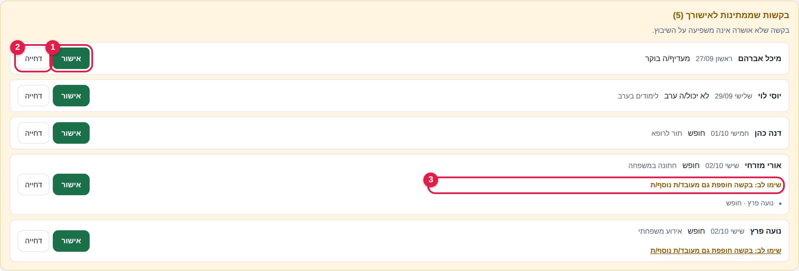
1אישור – הבקשה נכנסת לסידור. 2דחייה – המערכת מתעלמת ממנה כשהיא בונה. 3"שימו לב" – עוד עובד ביקש את אותו הדבר באותו יום.
עוברים על הבקשות מלמעלה למטה, ולוחצים אישור או דחייה בכל שורה.
שורה עם "שימו לב: בקשה חופפת גם מעובד/ת נוספ/ת" אומרת שאם תאשרו את כולם, יישאר פחות כוח אדם באותו יום. שם מופיע גם מי האחר.
בקשה שנדחתה נשארת מסומנת בלוח באדום, כך שתמיד רואים מה נדחה.
שימו לבאין שדה "סיבת הדחייה". אם חשוב שהעובד יבין למה, כדאי להגיד לו ישירות.
מה העובד רואה, ומתי
אישור או דחייה של בקשת אילוץ מוצגים לעובד רק אחרי שפרסמתם את הסידור, לא ברגע ההחלטה. עד אז הוא רואה שהבקשה "ממתינה". כך אפשר לשנות החלטה בלי שהעובד כבר יודע.
בקשת חופשה היא היוצאת מן הכלל: ההחלטה עליה מוצגת לעובד מיד, והוא מקבל עליה הודעה.
בקשה שאושרה חוסמת גם שיבוץ ידני נגדה. אם בכל זאת רוצים לשבץ את העובד ביום או במשמרת שביקש לא לעבוד, מבטלים קודם את הבקשה בלשונית "אילוצים" (לוחצים שוב על אותה משבצת בלוח), ואז משבצים.
"מעדיף/ה" שאושר מקבל קדימות בבנייה האוטומטית, והוא נספר במכסת הבקשות של העובד כמו כל בקשה אחרת.
חופשות
בקשת חופשה יכולה להימשך כמה ימים ולחצות שבועות. היא מופיעה כשורה אחת עם התאריכים, מספר הימים, וסימון בתשלום או ללא תשלום. אישור או דחייה חלים על כל הימים יחד.
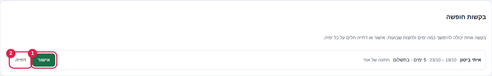
1אישור. 2דחייה. חופשה בתשלום נספרת בדוח, ומשפיעה על המכסה השבועית של העובד.
הלוח כולו: מי ביקש מה
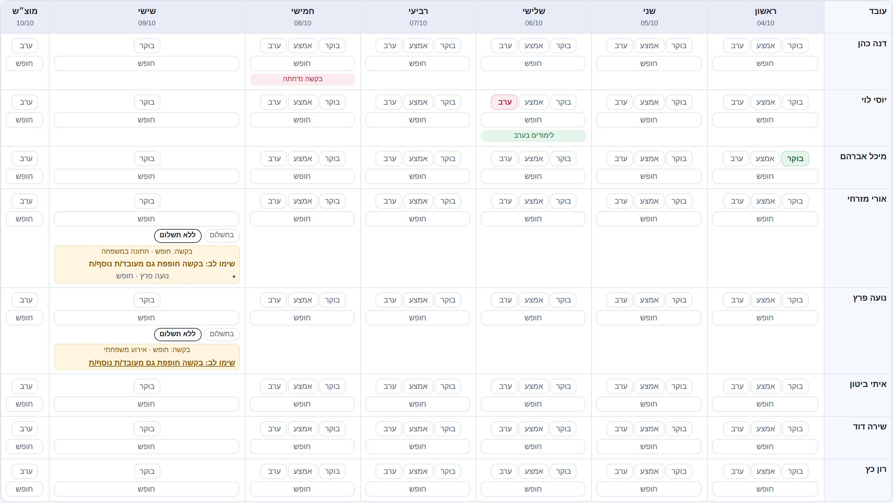
שורה לכל עובד, עמודה לכל יום. חגים ואירועי לוח השנה מופיעים בראש כל עמודה.
אושרנדחהממתין לאישור
איך יודעים שסיימתםהלוח הצהוב "בקשות שממתינות לאישורך" נעלם, ואין עוד משבצות צהובות בלוח.
מועד סגירת אילוצים (לא חובה)
אם רוצים שהעובדים יפסיקו להגיש בקשות ביום ובשעה קבועים בכל שבוע, מגדירים זאת בלשונית "הגדרות", בחלק "מועד סגירת אילוצים קבוע". אין מועד מראש: כל עסק בוחר לפי הנהלים שלו, ואפשר לשנות בכל עת.
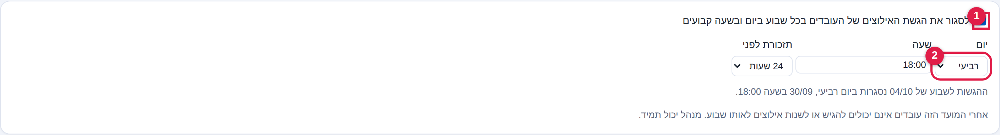
1מסמנים כדי להפעיל. 2בוחרים יום, שעה ותזכורת. מתחת מופיע התאריך המלא של השבוע הקרוב. הערכים בצילום הם דוגמה בלבד.
אחרי המועד העובדים לא יכולים להגיש בקשה חדשה או לשנות בקשה קיימת לאותו שבוע, והמועד מוצג להם במסך.
אתם תמיד יכולים להוסיף, לשנות ולאשר בקשות, גם אחרי המועד.
2
שיוך עובדים לסניפים
לשונית "עובדים"
לפני שבונים סידור, בודקים אם יש עובדים שרוצים לשייך לסניפים מסוימים. זה לא מתחיל מחדש בכל שבוע: מה שסימנתם נשמר בכרטיס העובד ונשאר משבוע לשבוע, עד שתשנו אותו בעצמכם.
מה סימנתם בכרטיס העובד
מה המערכת עושה
לא סימנתם אף סניף
העובד זמין בכל הסניפים. המערכת יכולה לשבץ אותו בכל מקום שצריך. זו ברירת המחדל.
סימנתם סניף אחד או יותר
העובד ישובץ רק בסניפים שסימנתם. בשאר הסניפים הוא לא יופיע ברשימות ולא ישובץ אוטומטית.
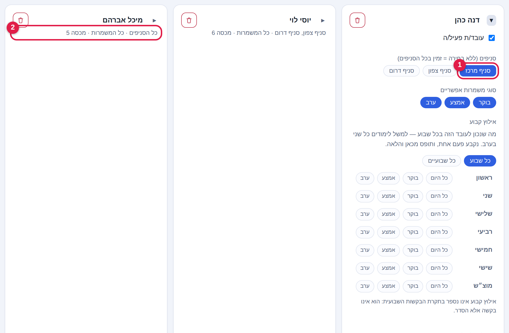
1שורת "סניפים": לחיצה על שם סניף מסמנת אותו (כחול) או מבטלת. 2הסיכום מתחת לשם העובד: "כל הסניפים" או שמות הסניפים שסומנו.
עוברים ללשונית עובדים.
פותחים את כרטיס העובד בחץ שליד השם.
בשורה "סניפים (ללא בחירה = זמין בכל הסניפים)" לוחצים על הסניפים שהעובד עובד בהם. לחיצה נוספת מבטלת.
כדי לראות מי משויך לסניף מסוים, בוחרים אותו ברשימה "כל הסניפים" מעל רשימת העובדים.
עובד בהתלמדות
בכרטיס העובד, מעל בחירת הסניפים, יש וי "עובד/ת בהתלמדות" (1 בתמונה). עובד שמסומן כך מתנהג אחרת:
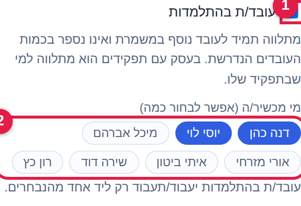
1הוי. 2מי מכשיר: לוחצים על שם כדי לבחור או לבטל, אפשר כמה.
הוא תמיד ליד עובד נוסף. המערכת לא משבצת אותו לבד, ובבנייה אוטומטית הוא נוסף רק למשמרת שכבר יש בה עובד שיכול ללוות אותו.
הוא תמיד תוספת, ולא תופס מקום. גם אם הגדרתם למשמרת שני עובדים, המתלמד אינו אחד מהם: המשמרת דורשת שני עובדים שאינם מתלמדים, והמתלמד נוסף עליהם (במשבצת הוא מוצג אחרי המקומות הנדרשים). לכן מתלמד אף פעם לא מחליש את הכיסוי. משמרת שיש בה רק מתלמד נחשבת ריקה ומסומנת כחוסר באיוש.
בעסק עם תפקידים הוא מתלווה לעובד בתפקיד שלו.
מי מכשיר: אם בחרתם עובדים, המתלמד יעבוד רק ליד אחד מהם, והבחירה גוברת על התפקיד. בלי בחירה, כל עובד מתאים. כך אתם מחליטים מי מכשיר את מי.
איך רואים בסידורליד שמו כתוב "(בהתלמדות)". אם שיבצתם ידנית מתלמד לבד, או בלי המלווה שבחרתם, מופיעה התראה תחת "הפרות": "מתלמד לבד" או "מתלמד בלי מי שהוגדר להכשיר".
איך יודעים שסיימתםבסיכום מתחת לשם של כל עובד כתוב מה שאתם מתכוונים אליו: שם הסניף, או "כל הסניפים".
המלכודתסימון סניף אחד בטעות אומר שהעובד לא יוכל לעבוד באף סניף אחר. אם אחרי הבנייה משמרות בסניף מסוים נשארו ריקות, בדקו קודם כאן אם יש שם מספיק עובדים משויכים. ואם רוצים שכולם יוכלו להשתבץ בכל מקום, לא מסמנים כלום.
3
אישור המשמרות בכל הסניפים
לשונית "סניפים", ואחר כך "סידור שבועי"
לפני שבונים, מוודאים שלכל סניף מוגדר נכון כמה עובדים צריך, באילו ימים ובאילו שעות.
כל שינוי בדרישות הוא קבוע, עד שמשנים שוב
מה שמוגדר בכרטיס הסניף חוזר כל שבוע באותה צורה, ואין צורך להקליד אותו מחדש.
כדי להתחיל מאפס, לוחצים "איפוס דרישות הסניף" (1 בתמונה): כל הדרישות של הסניף מתאפסות ל-0 מהשבוע המוצג והלאה, ואתם מקלידים רק את מה שנדרש. מה שתקלידו נשמר לכל השבועות הבאים, עד האיפוס הבא. שיבוצים שכבר נעשו לא משתנים, וגם שבועות קודמים נשארים כמו שהיו.
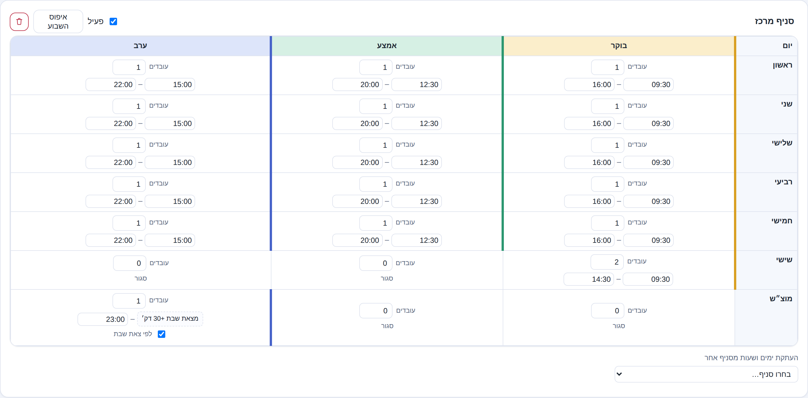
לכל יום ולכל משמרת: כמה עובדים ובאילו שעות. "0" או "סגור" אומר שאין משמרת. בתחתית אפשר להעתיק ימים ושעות מסניף אחר.
אחרי "איפוס דרישות הסניף"
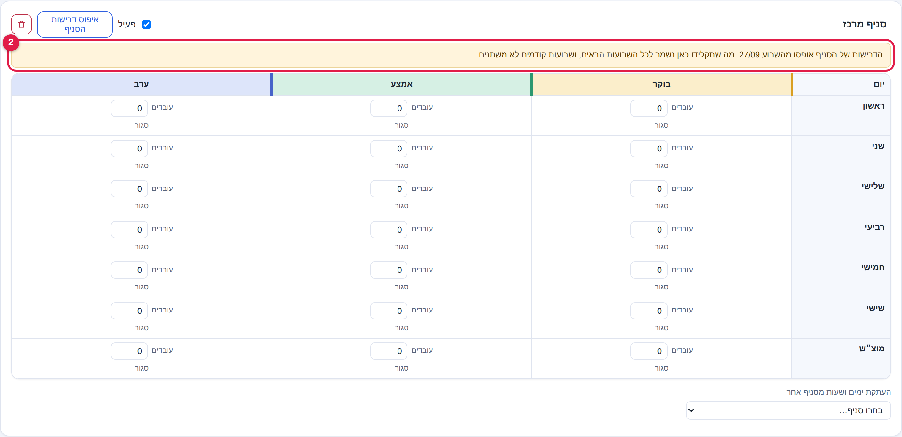
2מופיע פס צהוב עם תאריך תחילת האיפוס. כל המשמרות ב-0 ("סגור"), ומה שתקלידו נשמר מהשבוע הזה ואילך.
לוחצים איפוס דרישות הסניף בכרטיס הסניף. אין צורך לעשות זאת לכל הסניפים, רק לאלה שרוצים.
מקלידים בכל משמרת כמה עובדים צריך. השעות של הסניף נשמרות.
עוברים ל"סידור שבועי" ובונים. מהשבוע הבא לא צריך להקליד שוב, אלא אם רוצים לשנות.
המלכודתאיפוס הדרישות לא מוריד עובדים שכבר שובצו. משמרת ששובצו אליה עובדים ואז קבעתם לה 0 נשארת עם העובדים, והמערכת מציגה אותה ברשימת "בעיות איוש" כ"שיבוץ במשמרת שאינה פעילה", כדי שלא תישכח. את השיבוצים האלה מסירים ידנית, או עם "נקה סידור" בתפריט "כלים נוספים" ובונים מחדש.
שינוי חד-פעמי לשבוע אחד
חג, יום סגור ושעות מיוחדות נקבעים לשבוע הזה בלבד ולא משנים את דרישות הסניף. עושים אותם מתוך לשונית "סידור שבועי":
חג או יום סגור: כשבשבוע יש חג, מופיע פס כחול "השבוע נופלים…". "לסגור את היום הזה" סוגר את היום בכל הסניפים לשבוע הזה בלבד. "לא השבוע" משאיר הכול כרגיל.
שעות מיוחדות ליום: בתפריט "כלים נוספים", בחלק "אירועי לוח שנה".
אחרי השינוי עוברים על הסידור: ימים סגורים מסומנים ברקע מפוספס.
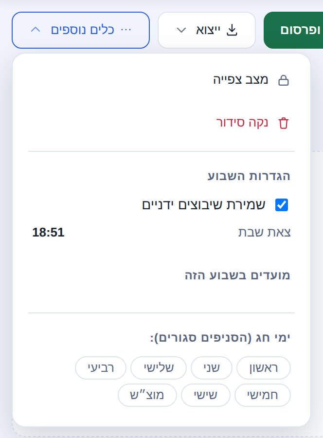
תפריט "כלים נוספים": ניקוי סידור, שמירת שיבוצים ידניים, צאת שבת (מחושב אוטומטית, לקריאה בלבד), ואירועי לוח שנה.
צאת שבת ומשמרת מוצ״ש
צאת שבת מחושב אוטומטית לפי תל אביב, לכל הארץ, ומתעדכן כל שבוע. הוא מוצג ב"כלים נוספים" לקריאה בלבד ואי אפשר לשנות אותו. מה שכן קובעים, פעם אחת לעסק: כמה דקות אחרי צאת השבת מתחילה משמרת מוצ״ש, בלשונית "הגדרות", בחלק "מוצאי שבת".
איך יודעים שסיימתםעברתם על כל סניף פעם אחת, וכל הימים החריגים בשבוע הזה (חג, שעות מיוחדות) מטופלים.
4
בניית הסידור האוטומטי
לשונית "סידור שבועי"
אחרי שהבקשות אושרו והמשמרות מוגדרות, לוחצים על הכפתור הכחול. המערכת משבצת את כולם לפי זמינות, אילוצים שאושרו, ומכסת המשמרות של כל עובד.
שלוש תגיות מתחת לסרגל: בעיות איוש, הפרות, והמלצות. תצוגה "לפי סניף" או "לפי עובד" בכפתורים שמתחתן.
תגית
מה זה אומר
בעיות איוש
משמרת שלא התמלאה במספר העובדים הנדרש, כי אין מי שיכול לקחת אותה.
הפרות
משהו שנוגד את הכללים, למשל מנוחה בין משמרות. אחרי בנייה אוטומטית זה אמור להיות 0.
המלצות
הצעות לשיפור, לא חובה לטפל בהן.
לחיצה על תגית פותחת את הרשימה המלאה ומראה בדיוק איפה הבעיה.
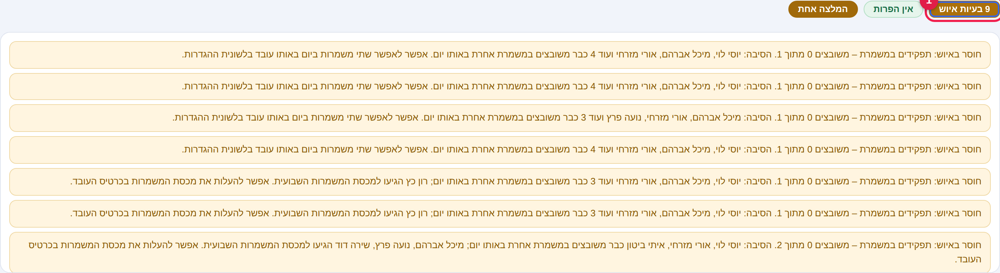
הרשימה הפתוחה: כל בעיה עם היום, הסניף והמשמרת.
המלכודתאם "בנה סידור" יוצא עם הרבה בעיות איוש, בדרך כלל הסיבה היא לא הכפתור. או שאושרו יותר מדי בקשות חופש ביום אחד (שלב 1), או שהדרישות של הסניף גבוהות ממה שיש (שלב 3).
5
תיקונים אחרונים בגרירה
לשונית "סידור שבועי"
הסידור האוטומטי הוא נקודת פתיחה. כאן מתאימים אותו לדברים שהמערכת לא יודעת.
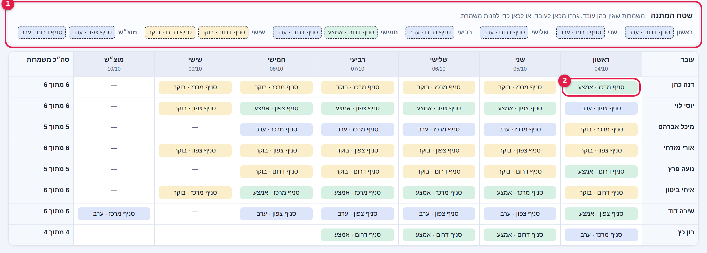
1שטח ההמתנה: משמרות שאין בהן עובד. גוררים אותן אל עובד פנוי, או מחזירים לשם משמרת שרוצים לפנות. 2גוררים משמרת לתא של עובד אחר באותו יום.
עוברים לתצוגה לפי עובד כדי להזיז משמרות בין אנשים. בסוף השורה של כל עובד רואים כמה משמרות יש לו מתוך המכסה שלו.
אפשר להזיז משמרת רק בתוך אותו יום, ולעובד שאין לו כבר משמרת באותו יום. במקום לגרור אפשר ללחוץ על המשמרת כדי להרים אותה, ואז ללחוץ על העובד.
משמרת שאין בה עובד נמצאת בשטח ההמתנה בראש הטבלה. גוררים אותה לעובד, או גוררים אליו משמרת כדי לפנות אותה.
כשבונים מחדש אחרי תיקונים, מפעילים קודם ב"כלים נוספים" את "שמירת שיבוצים ידניים", כדי שמה שקבעתם ביד לא יימחק.
תצוגה לפי סניף: בחירה מתוך רשימה
בתצוגה לפי סניף לכל משמרת יש רשימה נפתחת. בוחרים בה עובד, או מוסיפים עוד אחד בכפתור "+ הוסף".
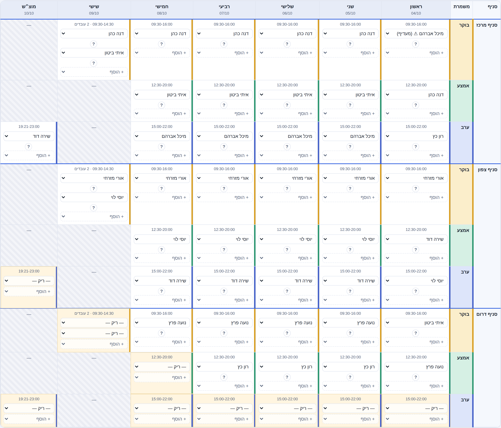
כל משמרת: שעות, שם העובד ברשימה נפתחת, והכפתור ? "למה דווקא הוא?".
"למה דווקא הוא?"הלחיצה על ? ליד שיבוץ מסבירה למה נבחר האדם הזה, מי אחר יכל לקחת את המשמרת, ומי לא יכל ומדוע. כך פותרים ויכוח עם עובד בחצי דקה.
שימו לב לסימן ⚠ברשימה הנפתחת, שם עובד עם ⚠ ואחריו הערה בסוגריים (למשל "חופש", "חסום", "כבר משובץ", "לא בסניף") אומר שיש סיבה לחשוב פעמיים. אפשר לבחור אותו בכל זאת, אבל אתם עושים זאת בידיעה.
6
בדיקה, פרסום וייצוא
לשונית "סידור שבועי", הכפתור הירוק
עד הפרסום העובדים לא רואים כלום. הסידור הוא טיוטה שרק אתם רואים. הכפתור הירוק "בדיקה ופרסום" נמצא בסרגל, משמאל ל"בנה סידור אוטומטי".
לוחצים בדיקה ופרסום.
המערכת מציגה סיכום: כמה בעיות איוש וכמה הפרות נשארו.
לוחצים פרסום (1 בתמונה) כדי לפרסם כמו שזה, או חזרה לתיקון כדי לחזור לעריכה.
מרגע הפרסום העובדים רואים את הסידור, וכל אחד מקבל התראה.
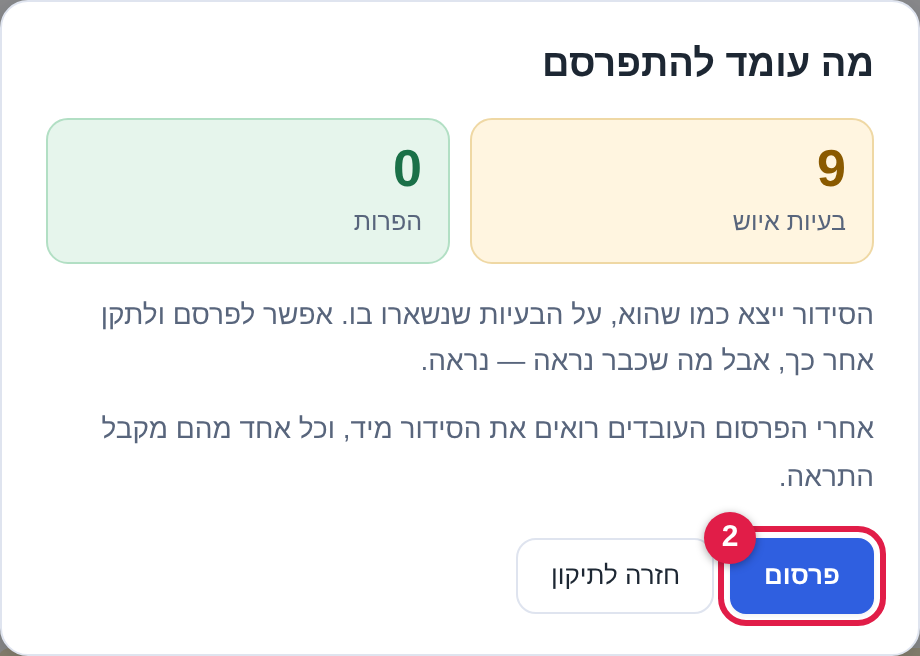
2כפתור "פרסום".
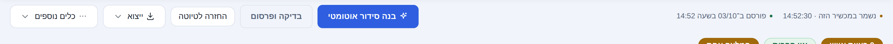
אחרי הפרסום: מופיע "פורסם ב־…" והכפתור מתחלף ל"החזרה לטיוטה".
אם צריך לשנות אחרי הפרסום
שבוע שפורסם נעול לעריכה. כשמנסים לשנות, מופיע חלון אזהרה. יש שתי דרכים:
החזרה לטיוטה: הסידור נעלם מהעובדים עד לפרסום הבא. מתאים כשמשנים הרבה.
עריכה חיה: כל שינוי מגיע לעובדים מיד, בלי הודעה נוספת. מתאים לתיקון קטן.
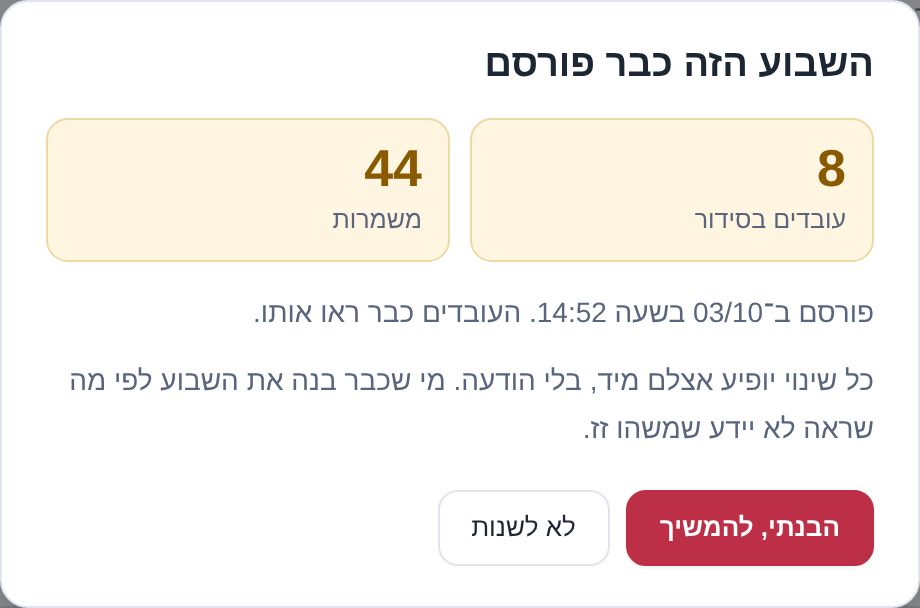
המלכודתבעריכה חיה, עובד שכבר תכנן את השבוע לפי מה שראה לא יידע שמשהו השתנה. אחרי שינוי, ספרו לו.
ייצוא
התפריט ייצוא נותן את הסידור בצורות שאפשר לשלוח או להדפיס:
הסידור כולו: אקסל, CSV, העתק כטקסט או הדפסה.
ייצוא אישי לעובד: בוחרים עובד, ומקבלים רק את המשמרות שלו, כאקסל או כטקסט לוואטסאפ להדבקה בהודעה.
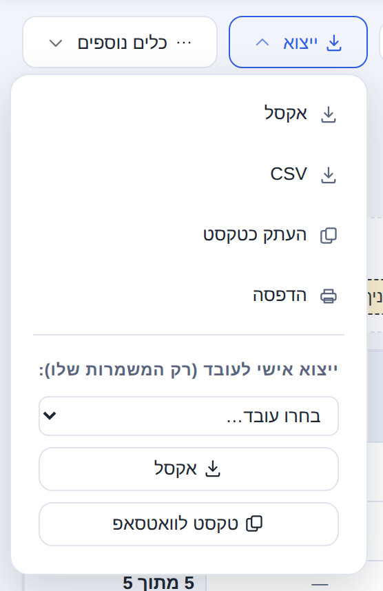
✓
רשימת בדיקה קצרה, כל שבוע
להדפיס ולתלות ליד המחשב
בראש המסך כתוב "השבוע הבא" (לא השבוע הנוכחי)
אין יותר בקשות בלוח הצהוב "בקשות שממתינות לאישורך"
בקשות חופשה טופלו (בתשלום / ללא תשלום נכון)
ימי חג ושעות מיוחדות של השבוע הוגדרו
בדקתי בלשונית "עובדים" שהשיוך לסניפים נכון (בלי סימון = זמין בכל הסניפים)
אם הגדרתי מועד סגירת אילוצים: הוא נכון לשבוע הזה (לשונית "הגדרות")
דרישות הסניפים נכונות (ואם צריך להתחיל מאפס: "איפוס דרישות הסניף")
לחצתי "בנה סידור אוטומטי"
עברתי על תגיות "בעיות איוש" ו"הפרות"
שיבצתי ידנית את מה שנשאר בשטח ההמתנה (ואם תיקנתי ידנית לפני בנייה מחדש: "שמירת שיבוצים ידניים")
בכרטיס העובד סומנו סניפים אחרים. לשחרור מלא מבטלים את כל הסימונים, והוא יהיה זמין בכל הסניפים.
עובד אומר שביקש חופש ולא קיבל
בדקו בלשונית "אילוצים": אם הבקשה עדיין צהובה, היא לא אושרה, ולכן המערכת התעלמה ממנה.
עובד שואל אם אישרתי לו, ואני כבר החלטתי
ההחלטה על בקשת אילוץ מוצגת לעובד רק אחרי פרסום הסידור. אחרי הפרסום הוא יראה אושר או נדחה. בקשת חופשה מוצגת לו מיד.
לא מצליח לשבץ עובד ביום שביקש לא לעבוד
בקשה שאושרה חוסמת שיבוץ ידני. בלשונית "אילוצים" מבטלים את הבקשה (לוחצים שוב על המשבצת בלוח), ואז משבצים.
משמרת נשארה ריקה אחרי "בנה סידור"
אף אחד לא היה פנוי לפי הכללים. היא בשטח ההמתנה. אפשר לגרור אליה עובד ידנית.
רוצים לסגור יום אחד רק השבוע
בפס הכחול של החג: "לסגור את היום הזה". לא לשנות את דרישות הסניף.
מבנים מחדש ומאבדים את התיקונים שלי
לפני הבנייה מפעילים ב"כלים נוספים" את "שמירת שיבוצים ידניים".
setshifts.com · תמיכה: מתוך המערכת, "קריאת שירות", או במייל support@setshifts.com.
שעות השירות של SetShifts: ראשון עד חמישי, 09:00–15:30. אלה שעות המענה של צוות SetShifts בלבד, ואין להן קשר לשעות ולהגדרות שבתוך המערכת של העסק שלכם, כמו סניפים, משמרות ושעות פתיחה.